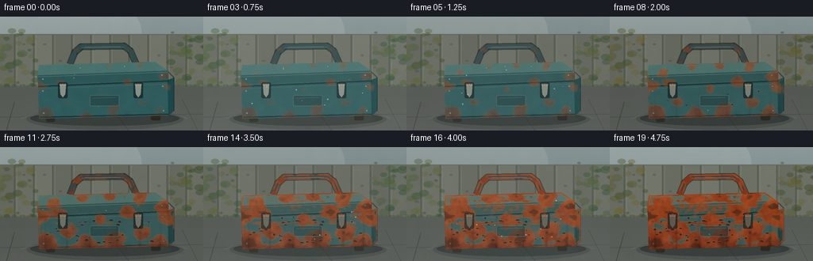
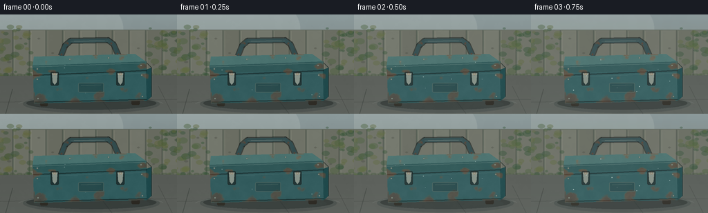

CODING AGENTS AS PIXEL WORLD MODELS
traex/GPT-5.6-Sol · material_0049
点击播放 · 原生 RGB 像素
逐轮保存的候选
回放视频、检查图与代码变化。
每份候选均可单独播放。实际图片检查记录在下方工具轨迹中。
候选 01播放与检查图
点击播放 · 原生 RGB 像素


展开代码变化
--- 上一保存版本
+++ 本次保存版本
@@ -0,0 +1,283 @@
+from pathlib import Path
+import math
+import numpy as np
+import cv2
+from PIL import Image, ImageDraw, ImageFilter
+import artifact_io
+
+# Deterministic procedural render: a fixed camera records years of weathering.
+W, H, N = 256, 144, 20
+S = 3
+WW, HH = W*S, H*S
+ROOT = Path(__file__).resolve().parent
+rng = np.random.default_rng(4901)
+
+def sc_pts(points):
+ return [(int(x*S), int(y*S)) for x, y in points]
+
+def clamp_u8(a):
+ return np.clip(a, 0, 255).astype(np.uint8)
+
+def multiscale_noise(h, w, seed, scales=(7, 15, 31, 61), weights=(.18,.24,.28,.30)):
+ rr = np.random.default_rng(seed)
+ out = np.zeros((h,w), np.float32)
+ for sz, wt in zip(scales, weights):
+ gh = max(2, math.ceil(h/sz)+2)
+ gw = max(2, math.ceil(w/sz)+2)
+ tiny = rr.random((gh,gw), dtype=np.float32)
+ field = cv2.resize(tiny, (w,h), interpolation=cv2.INTER_CUBIC)
+ out += wt * field
+ out -= out.min()
+ out /= max(float(out.max()), 1e-6)
+ return out
+
+def smoothstep(a, b, x):
+ y = np.clip((x-a)/(b-a), 0, 1)
+ return y*y*(3-2*y)
+
+# Stable material textures and corrosion propensity.
+yy, xx = np.mgrid[0:HH, 0:WW]
+metal_noise = multiscale_noise(HH, WW, 1024, (3,8,19,44), (.10,.18,.28,.44))
+corrosion = multiscale_noise(HH, WW, 7719, (4,10,23,51), (.12,.20,.30,.38))
+# Rust nucleates at fixed scratches and damp spots; these expand instead of wandering.
+seeds = [
+ (52,88,10,1.00),(58,119,16,1.18),(76,83,8,.92),(87,109,12,1.00),
+ (107,124,17,1.10),(126,91,8,.93),(142,117,15,1.16),(161,83,10,1.02),
+ (179,109,14,1.08),(199,119,13,1.20),(205,74,9,1.10),(68,69,9,.90),
+ (104,65,10,.92),(138,63,8,.90),(176,64,13,1.02),(211,91,11,1.10),
+ (97,42,5,.85),(158,47,6,.90)
+]
+seed_field = np.zeros((HH,WW),np.float32)
+for sx,sy,sr,amp in seeds:
+ d2=((xx/S-sx)/(sr*1.25))**2+((yy/S-sy)/sr)**2
+ seed_field=np.maximum(seed_field, amp*np.exp(-2.25*d2))
+# Horizontal scratches act as long corrosion paths.
+for y0,x0,x1,amp in [(96,58,194,.30),(115,62,205,.27),(79,53,205,.25),(68,59,191,.19)]:
+ vertical=np.exp(-((yy/S-y0)/1.3)**2)
+ window=smoothstep(x0-4,x0+5,xx/S)*smoothstep(x1+5,x1-4,xx/S)
+ seed_field=np.maximum(seed_field,amp*vertical*window)
+corrosion=np.clip(.53*corrosion+.62*seed_field,0,1)
+
+# Object masks used for physically stable surface changes.
+mask_img=Image.new('L',(WW,HH),0); md=ImageDraw.Draw(mask_img)
+front_poly=sc_pts([(48,85),(211,80),(212,125),(49,129)])
+lip_poly=sc_pts([(47,74),(212,68),(212,82),(48,89)])
+top_poly=sc_pts([(49,61),(195,57),(212,69),(47,75)])
+side_poly=sc_pts([(211,80),(219,77),(219,119),(212,125)])
+md.polygon(front_poly,fill=255); md.polygon(lip_poly,fill=255); md.polygon(top_poly,fill=255); md.polygon(side_poly,fill=255)
+# Handle as thick strokes in mask.
+handle_path=sc_pts([(88,60),(94,45),(102,38),(156,37),(164,43),(171,59)])
+md.line(handle_path, fill=255, width=7*S, joint='curve')
+obj_mask=np.asarray(mask_img,dtype=np.float32)/255
+# Edge dampness increases corrosion near the exposed silhouette and seams.
+eroded=cv2.erode((obj_mask*255).astype(np.uint8),np.ones((8,8),np.uint8),iterations=1)/255
+edge=np.clip(obj_mask-eroded,0,1)
+seam=np.zeros_like(obj_mask)
+for y0 in [75,82,87,125]:
+ seam=np.maximum(seam,np.exp(-((yy/S-y0)/2.2)**2)*((xx/S>46)&(xx/S<215)))
+corrosion=np.clip(corrosion+.22*edge+.16*seam,0,1)
+
+# Fixed background details.
+leaf_rng=np.random.default_rng(324)
+leaves=[]
+for side in [0,1]:
+ for _ in range(48):
+ x=float(leaf_rng.uniform(-8,45) if side==0 else leaf_rng.uniform(214,270))
+ y=float(leaf_rng.uniform(18,96)); r=float(leaf_rng.uniform(2,7))
+ col=int(leaf_rng.integers(0,3)); leaves.append((x,y,r,col))
+plank_knots=[]
+for x0 in range(0,257,24):
+ plank_knots.append((x0+int(rng.integers(4,20)),int(rng.integers(35,78)),int(rng.integers(2,5))))
+
+# Flakes are fixed chips that become visible at different dates.
+flake_rng=np.random.default_rng(908)
+flakes=[]
+for i in range(42):
+ x=float(flake_rng.uniform(53,207)); y=float(flake_rng.uniform(88,125))
+ rx=float(flake_rng.uniform(.7,2.5)); ry=float(flake_rng.uniform(.4,1.4))
+ birth=float(flake_rng.uniform(.28,.92)); flakes.append((x,y,rx,ry,birth))
+
+def draw_background(k):
+ t=k/(N-1)
+ # Slow exposure changes suggest weather cycles while preserving scene continuity.
+ weather=.97 + .035*math.sin(2*math.pi*(t*2.1+.12)) - .025*math.exp(-((t-.60)/.16)**2)
+ arr=np.zeros((HH,WW,3),np.float32)
+ Y=yy/(HH-1)
+ sky=np.array([139,153,154],np.float32)[None,None,:]*(1-.28*Y[...,None])
+ arr[:]=sky
+ im=Image.fromarray(clamp_u8(arr),'RGB'); d=ImageDraw.Draw(im,'RGBA')
+ # Soft overcast glow and distant roof line.
+ d.ellipse(sc_pts([(-35,-38),(178,78)]),fill=(218,223,214,40))
+ d.rectangle((0,22*S,WW,91*S),fill=(96,103,91,255))
+ # Aged vertical fence, muted and out of focus.
+ for i,x0 in enumerate(range(-4,265,24)):
+ shade=104 + (i%3)*5
+ d.rectangle((x0*S,23*S,(x0+22)*S,91*S), fill=(shade,shade+3,shade-8,255))
+ d.line(((x0+22)*S,23*S,(x0+22)*S,92*S),fill=(49,56,50,115),width=S)
+ d.line(((x0+1)*S,24*S,(x0+1)*S,91*S),fill=(175,174,151,45),width=S)
+ for xk,yk,rk in plank_knots:
+ d.ellipse(((xk-rk)*S,(yk-rk*.55)*S,(xk+rk)*S,(yk+rk*.55)*S),fill=(48,51,44,65))
+ # Damp moss line on the fence base.
+ for x0 in range(0,256,5):
+ mh=2+3*math.sin(x0*.29)**2
+ d.rectangle((x0*S,(90-mh)*S,(x0+6)*S,92*S),fill=(61,78,54,100))
+ # Background leaves, mostly soft silhouettes.
+ season=0.5+0.5*math.sin(2*math.pi*(t*1.55+.08))
+ leaf_cols=[(48,76,52),(71,91,58),(92,100,60)]
+ for x,y,r,ci in leaves:
+ base=leaf_cols[ci]
+ c=(int(base[0]+18*(1-season)),int(base[1]+4*season),int(base[2]-8*(1-season)),110)
+ d.ellipse(((x-r)*S,(y-r*.65)*S,(x+r)*S,(y+r*.65)*S),fill=c)
+ # Wet concrete plane.
+ d.polygon(sc_pts([(0,89),(256,88),(256,144),(0,144)]),fill=(87,91,86,255))
+ for y0 in range(91,145):
+ a=int(15*(y0-91)/54)
+ d.line((0,y0*S,WW,y0*S),fill=(140,146,140,a),width=S)
+ # Perspective seams/cracks.
+ d.line(sc_pts([(18,108),(8,144)]),fill=(48,53,49,145),width=S)
+ d.line(sc_pts([(229,104),(249,144)]),fill=(50,53,49,100),width=S)
+ d.line(sc_pts([(0,127),(256,123)]),fill=(48,52,49,90),width=S)
+ d.line(sc_pts([(147,124),(162,144)]),fill=(45,49,46,85),width=S)
+ # Puddle reflection beneath the box.
+ d.ellipse((33*S,116*S,231*S,143*S),fill=(43,52,52,70))
+ d.ellipse((49*S,122*S,216*S,138*S),fill=(113,126,126,32))
+ d.arc((25*S,119*S,238*S,143*S),190,349,fill=(181,190,181,40),width=S)
+ # Tiny weeds slowly occupy cracks over years.
+ growth=smoothstep(.15,.92,t)
+ weed_rng=np.random.default_rng(992)
+ for i in range(15):
+ wx=float(weed_rng.uniform(4,246)); wy=float(weed_rng.uniform(126,143)); ht=float(weed_rng.uniform(2,9))*growth
+ if i/15 <= growth+.12:
+ d.line(sc_pts([(wx,wy),(wx-1.7,wy-ht)]),fill=(64,86,51,170),width=max(1,S//2))
+ d.line(sc_pts([(wx,wy-ht*.4),(wx+2.2,wy-ht*.75)]),fill=(79,97,56,140),width=max(1,S//2))
+ im=im.filter(ImageFilter.GaussianBlur(.22*S))
+ ar=np.asarray(im,dtype=np.float32)*weather
+ # Static fine grain prevents sterile gradients.
+ grain=(metal_noise-.5)*2.4
+ ar+=grain[...,None]
+ return Image.fromarray(clamp_u8(ar),'RGB')
+
+def render_toolbox(bg,k):
+ t=k/(N-1)
+ age=smoothstep(0,1,t)
+ im=bg.copy(); d=ImageDraw.Draw(im,'RGBA')
+ # Grounding shadow and small feet.
+ d.ellipse((38*S,119*S,226*S,138*S),fill=(24,30,29,112))
+ d.rounded_rectangle((58*S,121*S,69*S,133*S),radius=2*S,fill=(45,43,36,255))
+ d.rounded_rectangle((190*S,120*S,202*S,131*S),radius=2*S,fill=(43,40,34,255))
+ # Handle behind lid: silver-blue paint turning brown at joints.
+ hc=(49+int(26*age),75-int(18*age),77-int(25*age),255)
+ d.line(handle_path,fill=(20,27,27,150),width=9*S,joint='curve')
+ d.line(handle_path,fill=hc,width=6*S,joint='curve')
+ d.line(sc_pts([(102,39),(156,38)]),fill=(113,132,128,90),width=S)
+ # Surface paint geometry.
+ paint=np.array([48,91,93],np.float32)
+ faded=np.array([76,82,73],np.float32)
+ base=paint*(1-.42*age)+faded*(.42*age)
+ d.polygon(top_poly,fill=tuple(map(int,[base[0]+24,base[1]+22,base[2]+17,255])))
+ d.polygon(lip_poly,fill=tuple(map(int,[base[0]-3,base[1]-5,base[2]-7,255])))
+ d.polygon(front_poly,fill=tuple(map(int,[base[0],base[1],base[2],255])))
+ d.polygon(side_poly,fill=tuple(map(int,[base[0]-20,base[1]-20,base[2]-19,255])))
+ # Panel shading integrated before corrosion.
+ d.line(sc_pts([(50,91),(210,85)]),fill=(136,169,165,34),width=S)
+ d.line(sc_pts([(50,127),(212,123)]),fill=(18,28,28,150),width=2*S)
+ d.line(sc_pts([(48,76),(211,70)]),fill=(180,200,188,65),width=S)
+ d.line(sc_pts([(48,88),(212,81)]),fill=(15,29,29,150),width=2*S)
+ d.line(sc_pts([(212,70),(219,77),(219,119)]),fill=(23,34,33,155),width=S)
+ # Composite stable pitted rust growth over painted surfaces.
+ arr=np.asarray(im,dtype=np.float32)
+ # Lower threshold through time; sharp noise produces islands and soft noise gives spreading blooms.
+ threshold=.80-.48*age
+ act=smoothstep(threshold-.055,threshold+.095,corrosion)
+ alpha=obj_mask*act*(.36+.64*age)
+ # Rust pigments vary within patches: ochre edges and umber cores.
+ n=metal_noise
+ rust=np.zeros_like(arr)
+ rust[...,0]=126+45*n
+ rust[...,1]=49+31*n
+ rust[...,2]=22+15*n
+ # Dark hydrated corrosion accumulates toward panel bottom.
+ damp=np.clip((yy/S-86)/44,0,1)
+ rust[...,0]-=26*damp; rust[...,1]-=12*damp
+ arr=arr*(1-alpha[...,None])+rust*alpha[...,None]
+ # Orange halo along newly advancing rust boundaries.
+ a8=(act*obj_mask*255).astype(np.uint8)
+ halo=(cv2.dilate(a8,np.ones((5,5),np.uint8))-a8).astype(np.float32)/255
+ halo*=obj_mask*(.15+.35*age)
+ ochre=np.array([190,90,34],np.float32)
+ arr=arr*(1-halo[...,None])+ochre*halo[...,None]
+ # Pits appear late in the wettest high-propensity spots.
+ pits=smoothstep(.72,.91,corrosion)*obj_mask*smoothstep(.42,.92,age)
+ pitcol=np.array([49,31,22],np.float32)
+ arr=arr*(1-.54*pits[...,None])+pitcol*(.54*pits[...,None])
+ # Fine paint grain and vertical rain staining confined to metal.
+ arr += ((metal_noise-.5)*7*obj_mask)[...,None]
+ streak=np.zeros((HH,WW),np.float32)
+ for sx in [57,84,113,147,176,202,214]:
+ width=1.0+(sx%3)*.45
+ streak+=np.exp(-((xx/S-sx)/width)**2)*np.clip((yy/S-78)/50,0,1)
+ streak=np.clip(streak,0,1)*obj_mask*age*.18
+ arr*=1-streak[...,None]
+ im=Image.fromarray(clamp_u8(arr),'RGB'); d=ImageDraw.Draw(im,'RGBA')
+ # Peeling paint chips: dark undercoat, then a curled pale paint lip.
+ for x,y,rx,ry,birth in flakes:
+ vis=smoothstep(birth,min(1,birth+.10),age)
+ if vis>.02:
+ rr=rx*(.45+.55*vis)
+ d.ellipse(((x-rr)*S,(y-ry)*S,(x+rr)*S,(y+ry)*S),fill=(46,31,23,int(200*vis)))
+ d.arc(((x-rr-.3)*S,(y-ry-.3)*S,(x+rr+.3)*S,(y+ry+.3)*S),180,355,fill=(150,157,138,int(150*vis)),width=max(1,S//2))
+ # Hardware, recognizable toolbox cues. Hardware also ages but remains reflective.
+ hw=(133-int(39*age),145-int(56*age),136-int(58*age),255)
+ for lx in (79,174):
+ d.rounded_rectangle(((lx-6)*S,83*S,(lx+6)*S,103*S),radius=2*S,fill=(24,33,32,185))
+ d.polygon(sc_pts([(lx-4,85),(lx+4,85),(lx+3,98),(lx,102),(lx-3,98)]),fill=hw)
+ d.line(sc_pts([(lx-3,87),(lx+3,87)]),fill=(222,218,187,105),width=S)
+ # Rust around latch screws progresses.
+ ring=(151,67,26,int(70+120*age))
+ d.ellipse(((lx-2)*S,84*S,(lx+2)*S,88*S),outline=ring,width=S)
+ # Central inset label plate without text.
+ d.rounded_rectangle((113*S,99*S,150*S,113*S),radius=2*S,fill=(27,53,54,115),outline=(125,145,132,90),width=S)
+ d.line((117*S,103*S,146*S,102*S),fill=(192,201,178,38),width=S)
+ # Rivets and lid highlights.
+ for rx,ry in [(54,79),(204,74),(54,94),(205,88),(55,122),(206,119),(101,65),(157,63)]:
+ rc=(128-int(45*age),141-int(61*age),131-int(65*age),220)
+ d.ellipse(((rx-1.2)*S,(ry-1.2)*S,(rx+1.2)*S,(ry+1.2)*S),fill=rc,outline=(31,37,32,140),width=max(1,S//2))
+ # Handle rust collars and grip highlight.
+ for hx,hy in [(89,58),(170,57),(98,42),(161,42)]:
+ rr=1.4+1.4*age
+ d.ellipse(((hx-rr)*S,(hy-rr)*S,(hx+rr)*S,(hy+rr)*S),fill=(125,53,25,int(90+140*age)))
+ d.line(sc_pts([(107,38.7),(151,38.2)]),fill=(195,202,184,75),width=S)
+ # Water beads glint on rain phases, their placement deterministic per frame.
+ rain_phase=max(0,math.sin(2*math.pi*(t*1.65-.05)))
+ bead_rng=np.random.default_rng(700+k)
+ for _ in range(int(3+8*rain_phase)):
+ bx=float(bead_rng.uniform(54,207)); by=float(bead_rng.uniform(63,119)); br=float(bead_rng.uniform(.25,.7))
+ d.ellipse(((bx-br)*S,(by-br)*S,(bx+br)*S,(by+br)*S),fill=(207,224,220,int(70+90*rain_phase)))
+ return im
+
+def add_atmosphere(im,k):
+ t=k/(N-1)
+ rain=max(0,math.sin(2*math.pi*(t*1.65-.05)))
+ ov=Image.new('RGBA',(WW,HH),(0,0,0,0)); d=ImageDraw.Draw(ov,'RGBA')
+ rr=np.random.default_rng(1700+k)
+ # Rain is subtle enough not to obscure the transformation.
+ for _ in range(int(9+27*rain)):
+ x=float(rr.uniform(0,256)); y=float(rr.uniform(10,136)); length=float(rr.uniform(3,8))
+ d.line(sc_pts([(x,y),(x-.9,y+length)]),fill=(212,224,223,int(12+29*rain)),width=max(1,S//2))
+ # Condensed lens haze on the most humid intervals.
+ haze=22*rain
+ d.rectangle((0,0,WW,HH),fill=(186,199,194,int(haze)))
+ out=Image.alpha_composite(im.convert('RGBA'),ov).convert('RGB')
+ return out.resize((W,H),Image.Resampling.LANCZOS)
+
+frames=[]
+for k in range(N):
+ frame=add_atmosphere(render_toolbox(draw_background(k),k),k)
+ frames.append(np.asarray(frame,dtype=np.uint8))
+frames=np.stack(frames,axis=0)
+assert frames.shape==(N,H,W,3) and frames.dtype==np.uint8
+artifact_io.save(frames,ROOT)
+print('saved',frames.shape,frames.dtype)
+# Useful regeneration diagnostics, not additional artifacts required by the benchmark.
+print('mean RGB first/final',frames[0].mean(axis=(0,1)).round(1),frames[-1].mean(axis=(0,1)).round(1))
+print('frame-to-frame MAE',np.abs(np.diff(frames.astype(np.int16),axis=0)).mean(axis=(1,2,3)).round(2).tolist())
候选 02播放与检查图
点击播放 · 原生 RGB 像素
展开代码变化
--- 上一保存版本
+++ 本次保存版本
@@ -105,7 +105,7 @@
Y=yy/(HH-1)
sky=np.array([139,153,154],np.float32)[None,None,:]*(1-.28*Y[...,None])
arr[:]=sky
- im=Image.fromarray(clamp_u8(arr),'RGB'); d=ImageDraw.Draw(im,'RGBA')
+ im=Image.fromarray(clamp_u8(arr)); d=ImageDraw.Draw(im,'RGBA')
# Soft overcast glow and distant roof line.
d.ellipse(sc_pts([(-35,-38),(178,78)]),fill=(218,223,214,40))
d.rectangle((0,22*S,WW,91*S),fill=(96,103,91,255))
@@ -155,7 +155,7 @@
# Static fine grain prevents sterile gradients.
grain=(metal_noise-.5)*2.4
ar+=grain[...,None]
- return Image.fromarray(clamp_u8(ar),'RGB')
+ return Image.fromarray(clamp_u8(ar))
def render_toolbox(bg,k):
t=k/(N-1)
@@ -218,7 +218,7 @@
streak+=np.exp(-((xx/S-sx)/width)**2)*np.clip((yy/S-78)/50,0,1)
streak=np.clip(streak,0,1)*obj_mask*age*.18
arr*=1-streak[...,None]
- im=Image.fromarray(clamp_u8(arr),'RGB'); d=ImageDraw.Draw(im,'RGBA')
+ im=Image.fromarray(clamp_u8(arr)); d=ImageDraw.Draw(im,'RGBA')
# Peeling paint chips: dark undercoat, then a curled pale paint lip.
for x,y,rx,ry,birth in flakes:
vis=smoothstep(birth,min(1,birth+.10),age)
可观测工具轨迹
实际执行的命令与返回图片。
命令 1exit 0
/bin/bash -lc "cat prompt.txt && printf '\\n--- GENERATION_RULES.md ---\\n' && cat GENERATION_RULES.md && printf '\\n--- task_spec.json ---\\n' && cat task_spec.json"
命令 2exit 0
/bin/bash -lc "find . -maxdepth 2 -type f -printf '%p\\n' | sort && printf '\\n--- tools ---\\n' && command -v ffmpeg || true && command -v convert || true && python3 - <<'PY'
try:
import cv2; print('cv2', cv2.__version__)
except Exception as e: print('no cv2',e)
try:
import PIL; print('PIL', PIL.__version__)
except Exception as e: print('no PIL',e)
try:
import numpy; print('numpy', numpy.__version__)
except Exception as e: print('no numpy',e)
PY"命令 3exit 0
/bin/bash -lc 'cat artifact_io.py'
命令 4exit 0
/bin/bash -lc "cat > generate.py <<'PY'
from pathlib import Path
import math
import numpy as np
import cv2
from PIL import Image, ImageDraw, ImageFilter
import artifact_io
# Deterministic procedural render: a fixed camera records years of weathering.
W, H, N = 256, 144, 20
S = 3
WW, HH = W*S, H*S
ROOT = Path(__file__).resolve().parent
rng = np.random.default_rng(4901)
def sc_pts(points):
return [(int(x*S), int(y*S)) for x, y in points]
def clamp_u8(a):
return np.clip(a, 0, 255).astype(np.uint8)
def multiscale_noise(h, w, seed, scales=(7, 15, 31, 61), weights=(.18,.24,.28,.30)):
rr = np.random.default_rng(seed)
out = np.zeros((h,w), np.float32)
for sz, wt in zip(scales, weights):
gh = max(2, math.ceil(h/sz)+2)
gw = max(2, math.ceil(w/sz)+2)
tiny = rr.random((gh,gw), dtype=np.float32)
field = cv2.resize(tiny, (w,h), interpolation=cv2.INTER_CUBIC)
out += wt * field
out -= out.min()
out /= max(float(out.max()), 1e-6)
return out
def smoothstep(a, b, x):
y = np.clip((x-a)/(b-a), 0, 1)
return y*y*(3-2*y)
# Stable material textures and corrosion propensity.
yy, xx = np.mgrid[0:HH, 0:WW]
metal_noise = multiscale_noise(HH, WW, 1024, (3,8,19,44), (.10,.18,.28,.44))
corrosion = multiscale_noise(HH, WW, 7719, (4,10,23,51), (.12,.20,.30,.38))
# Rust nucleates at fixed scratches and damp spots; these expand instead of wandering.
seeds = [
(52,88,10,1.00),(58,119,16,1.18),(76,83,8,.92),(87,109,12,1.00),
(107,124,17,1.10),(126,91,8,.93),(142,117,15,1.16),(161,83,10,1.02),
(179,109,14,1.08),(199,119,13,1.20),(205,74,9,1.10),(68,69,9,.90),
(104,65,10,.92),(138,63,8,.90),(176,64,13,1.02),(211,91,11,1.10),
(97,42,5,.85),(158,47,6,.90)
]
seed_field = np.zeros((HH,WW),np.float32)
for sx,sy,sr,amp in seeds:
d2=((xx/S-sx)/(sr*1.25))**2+((yy/S-sy)/sr)**2
seed_field=np.maximum(seed_field, amp*np.exp(-2.25*d2))
# Horizontal scratches act as long corrosion paths.
for y0,x0,x1,amp in [(96,58,194,.30),(115,62,205,.27),(79,53,205,.25),(68,59,191,.19)]:
vertical=np.exp(-((yy/S-y0)/1.3)**2)
window=smoothstep(x0-4,x0+5,xx/S)*smoothstep(x1+5,x1-4,xx/S)
seed_field=np.maximum(seed_field,amp*vertical*window)
corrosion=np.clip(.53*corrosion+.62*seed_field,0,1)
# Object masks used for physically stable surface changes.
mask_img=Image.new('L',(WW,HH),0); md=ImageDraw.Draw(mask_img)
front_poly=sc_pts([(48,85),(211,80),(212,125),(49,129)])
lip_poly=sc_pts([(47,74),(212,68),(212,82),(48,89)])
top_poly=sc_pts([(49,61),(195,57),(212,69),(47,75)])
side_poly=sc_pts([(211,80),(219,77),(219,119),(212,125)])
md.polygon(front_poly,fill=255); md.polygon(lip_poly,fill=255); md.polygon(top_poly,fill=255); md.polygon(side_poly,fill=255)
# Handle as thick strokes in mask.
handle_path=sc_pts([(88,60),(94,45),(102,38),(156,37),(164,43),(171,59)])
md.line(handle_path, fill=255, width=7*S, joint='curve')
obj_mask=np.asarray(mask_img,dtype=np.float32)/255
# Edge dampness increases corrosion near the exposed silhouette and seams.
eroded=cv2.erode((obj_mask*255).astype(np.uint8),np.ones((8,8),np.uint8),iterations=1)/255
edge=np.clip(obj_mask-eroded,0,1)
seam=np.zeros_like(obj_mask)
for y0 in [75,82,87,125]:
seam=np.maximum(seam,np.exp(-((yy/S-y0)/2.2)**2)*((xx/S>46)&(xx/S<215)))
corrosion=np.clip(corrosion+.22*edge+.16*seam,0,1)
# Fixed background details.
leaf_rng=np.random.default_rng(324)
leaves=[]
for side in [0,1]:
for _ in range(48):
x=float(leaf_rng.uniform(-8,45) if side==0 else leaf_rng.uniform(214,270))
y=float(leaf_rng.uniform(18,96)); r=float(leaf_rng.uniform(2,7))
col=int(leaf_rng.integers(0,3)); leaves.append((x,y,r,col))
plank_knots=[]
for x0 in range(0,257,24):
plank_knots.append((x0+int(rng.integers(4,20)),int(rng.integers(35,78)),int(rng.integers(2,5))))
# Flakes are fixed chips that become visible at different dates.
flake_rng=np.random.default_rng(908)
flakes=[]
for i in range(42):
x=float(flake_rng.uniform(53,207)); y=float(flake_rng.uniform(88,125))
rx=float(flake_rng.uniform(.7,2.5)); ry=float(flake_rng.uniform(.4,1.4))
birth=float(flake_rng.uniform(.28,.92)); flakes.append((x,y,rx,ry,birth))
def draw_background(k):
t=k/(N-1)
# Slow exposure changes suggest weather cycles while preserving scene continuity.
weather=.97 + .035*math.sin(2*math.pi*(t*2.1+.12)) - .025*math.exp(-((t-.60)/.16)**2)
arr=np.zeros((HH,WW,3),np.float32)
Y=yy/(HH-1)
sky=np.array([139,153,154],np.float32)[None,None,:]*(1-.28*Y[...,None])
arr[:]=sky
im=Image.fromarray(clamp_u8(arr),'RGB'); d=ImageDraw.Draw(im,'RGBA')
# Soft overcast glow and distant roof line.
d.ellipse(sc_pts([(-35,-38),(178,78)]),fill=(218,223,214,40))
d.rectangle((0,22*S,WW,91*S),fill=(96,103,91,255))
# Aged vertical fence, muted and out of focus.
for i,x0 in enumerate(range(-4,265,24)):
shade=104 + (i%3)*5
d.rectangle((x0*S,23*S,(x0+22)*S,91*S), fill=(shade,shade+3,shade-8,255))
d.line(((x0+22)*S,23*S,(x0+22)*S,92*S),fill=(49,56,50,115),width=S)
d.line(((x0+1)*S,24*S,(x0+1)*S,91*S),fill=(175,174,151,45),width=S)
for xk,yk,rk in plank_knots:
d.ellipse(((xk-rk)*S,(yk-rk*.55)*S,(xk+rk)*S,(yk+rk*.55)*S),fill=(48,51,44,65))
# Damp moss line on the fence base.
for x0 in range(0,256,5):
mh=2+3*math.sin(x0*.29)**2
d.rectangle((x0*S,(90-mh)*S,(x0+6)*S,92*S),fill=(61,78,54,100))
# Background leaves, mostly soft silhouettes.
season=0.5+0.5*math.sin(2*math.pi*(t*1.55+.08))
leaf_cols=[(48,76,52),(71,91,58),(92,100,60)]
for x,y,r,ci in leaves:
base=leaf_cols[ci]
c=(int(base[0]+18*(1-season)),int(base[1]+4*season),int(base[2]-8*(1-season)),110)
d.ellipse(((x-r)*S,(y-r*.65)*S,(x+r)*S,(y+r*.65)*S),fill=c)
# Wet concrete plane.
d.polygon(sc_pts([(0,89),(256,88),(256,144),(0,144)]),fill=(87,91,86,255))
for y0 in range(91,145):
a=int(15*(y0-91)/54)
d.line((0,y0*S,WW,y0*S),fill=(140,146,140,a),width=S)
# Perspective seams/cracks.
d.line(sc_pts([(18,108),(8,144)]),fill=(48,53,49,145),width=S)
d.line(sc_pts([(229,104),(249,144)]),fill=(50,53,49,100),width=S)
d.line(sc_pts([(0,127),(256,123)]),fill=(48,52,49,90),width=S)
d.line(sc_pts([(147,124),(162,144)]),fill=(45,49,46,85),width=S)
# Puddle reflection beneath the box.
d.ellipse((33*S,116*S,231*S,143*S),fill=(43,52,52,70))
d.ellipse((49*S,122*S,216*S,138*S),fill=(113,126,126,32))
d.arc((25*S,119*S,238*S,143*S),190,349,fill=(181,190,181,40),width=S)
# Tiny weeds slowly occupy cracks over years.
growth=smoothstep(.15,.92,t)
weed_rng=np.random.default_rng(992)
for i in range(15):
wx=float(weed_rng.uniform(4,246)); wy=float(weed_rng.uniform(126,143)); ht=float(weed_rng.uniform(2,9))*growth
if i/15 <= growth+.12:
d.line(sc_pts([(wx,wy),(wx-1.7,wy-ht)]),fill=(64,86,51,170),width=max(1,S//2))
d.line(sc_pts([(wx,wy-ht*.4),(wx+2.2,wy-ht*.75)]),fill=(79,97,56,140),width=max(1,S//2))
im=im.filter(ImageFilter.GaussianBlur(.22*S))
ar=np.asarray(im,dtype=np.float32)*weather
# Static fine grain prevents sterile gradients.
grain=(metal_noise-.5)*2.4
ar+=grain[...,None]
return Image.fromarray(clamp_u8(ar),'RGB')
def render_toolbox(bg,k):
t=k/(N-1)
age=smoothstep(0,1,t)
im=bg.copy(); d=ImageDraw.Draw(im,'RGBA')
# Grounding shadow and small feet.
d.ellipse((38*S,119*S,226*S,138*S),fill=(24,30,29,112))
d.rounded_rectangle((58*S,121*S,69*S,133*S),radius=2*S,fill=(45,43,36,255))
d.rounded_rectangle((190*S,120*S,202*S,131*S),radius=2*S,fill=(43,40,34,255))
# Handle behind lid: silver-blue paint turning brown at joints.
hc=(49+int(26*age),75-int(18*age),77-int(25*age),255)
d.line(handle_path,fill=(20,27,27,150),width=9*S,joint='curve')
d.line(handle_path,fill=hc,width=6*S,joint='curve')
d.line(sc_pts([(102,39),(156,38)]),fill=(113,132,128,90),width=S)
# Surface paint geometry.
paint=np.array([48,91,93],np.float32)
faded=np.array([76,82,73],np.float32)
base=paint*(1-.42*age)+faded*(.42*age)
d.polygon(top_poly,fill=tuple(map(int,[base[0]+24,base[1]+22,base[2]+17,255])))
d.polygon(lip_poly,fill=tuple(map(int,[base[0]-3,base[1]-5,base[2]-7,255])))
d.polygon(front_poly,fill=tuple(map(int,[base[0],base[1],base[2],255])))
d.polygon(side_poly,fill=tuple(map(int,[base[0]-20,base[1]-20,base[2]-19,255])))
# Panel shading integrated before corrosion.
d.line(sc_pts([(50,91),(210,85)]),fill=(136,169,165,34),width=S)
d.line(sc_pts([(50,127),(212,123)]),fill=(18,28,28,150),width=2*S)
d.line(sc_pts([(48,76),(211,70)]),fill=(180,200,188,65),width=S)
d.line(sc_pts([(48,88),(212,81)]),fill=(15,29,29,150),width=2*S)
d.line(sc_pts([(212,70),(219,77),(219,119)]),fill=(23,34,33,155),width=S)
# Composite stable pitted rust growth over painted surfaces.
arr=np.asarray(im,dtype=np.float32)
# Lower threshold through time; sharp noise produces islands and soft noise gives spreading blooms.
threshold=.80-.48*age
act=smoothstep(threshold-.055,threshold+.095,corrosion)
alpha=obj_mask*act*(.36+.64*age)
# Rust pigments vary within patches: ochre edges and umber cores.
n=metal_noise
rust=np.zeros_like(arr)
rust[...,0]=126+45*n
rust[...,1]=49+31*n
rust[...,2]=22+15*n
# Dark hydrated corrosion accumulates toward panel bottom.
damp=np.clip((yy/S-86)/44,0,1)
rust[...,0]-=26*damp; rust[...,1]-=12*damp
arr=arr*(1-alpha[...,None])+rust*alpha[...,None]
# Orange halo along newly advancing rust boundaries.
a8=(act*obj_mask*255).astype(np.uint8)
halo=(cv2.dilate(a8,np.ones((5,5),np.uint8))-a8).astype(np.float32)/255
halo*=obj_mask*(.15+.35*age)
ochre=np.array([190,90,34],np.float32)
arr=arr*(1-halo[...,None])+ochre*halo[...,None]
# Pits appear late in the wettest high-propensity spots.
pits=smoothstep(.72,.91,corrosion)*obj_mask*smoothstep(.42,.92,age)
pitcol=np.array([49,31,22],np.float32)
arr=arr*(1-.54*pits[...,None])+pitcol*(.54*pits[...,None])
# Fine paint grain and vertical rain staining confined to metal.
arr += ((metal_noise-.5)*7*obj_mask)[...,None]
streak=np.zeros((HH,WW),np.float32)
for sx in [57,84,113,147,176,202,214]:
width=1.0+(sx%3)*.45
streak+=np.exp(-((xx/S-sx)/width)**2)*np.clip((yy/S-78)/50,0,1)
streak=np.clip(streak,0,1)*obj_mask*age*.18
arr*=1-streak[...,None]
im=Image.fromarray(clamp_u8(arr),'RGB'); d=ImageDraw.Draw(im,'RGBA')
# Peeling paint chips: dark undercoat, then a curled pale paint lip.
for x,y,rx,ry,birth in flakes:
vis=smoothstep(birth,min(1,birth+.10),age)
if vis>.02:
rr=rx*(.45+.55*vis)
d.ellipse(((x-rr)*S,(y-ry)*S,(x+rr)*S,(y+ry)*S),fill=(46,31,23,int(200*vis)))
d.arc(((x-rr-.3)*S,(y-ry-.3)*S,(x+rr+.3)*S,(y+ry+.3)*S),180,355,fill=(150,157,138,int(150*vis)),width=max(1,S//2))
# Hardware, recognizable toolbox cues. Hardware also ages but remains reflective.
hw=(133-int(39*age),145-int(56*age),136-int(58*age),255)
for lx in (79,174):
d.rounded_rectangle(((lx-6)*S,83*S,(lx+6)*S,103*S),radius=2*S,fill=(24,33,32,185))
d.polygon(sc_pts([(lx-4,85),(lx+4,85),(lx+3,98),(lx,102),(lx-3,98)]),fill=hw)
d.line(sc_pts([(lx-3,87),(lx+3,87)]),fill=(222,218,187,105),width=S)
# Rust around latch screws progresses.
ring=(151,67,26,int(70+120*age))
d.ellipse(((lx-2)*S,84*S,(lx+2)*S,88*S),outline=ring,width=S)
# Central inset label plate without text.
d.rounded_rectangle((113*S,99*S,150*S,113*S),radius=2*S,fill=(27,53,54,115),outline=(125,145,132,90),width=S)
d.line((117*S,103*S,146*S,102*S),fill=(192,201,178,38),width=S)
# Rivets and lid highlights.
for rx,ry in [(54,79),(204,74),(54,94),(205,88),(55,122),(206,119),(101,65),(157,63)]:
rc=(128-int(45*age),141-int(61*age),131-int(65*age),220)
d.ellipse(((rx-1.2)*S,(ry-1.2)*S,(rx+1.2)*S,(ry+1.2)*S),fill=rc,outline=(31,37,32,140),width=max(1,S//2))
# Handle rust collars and grip highlight.
for hx,hy in [(89,58),(170,57),(98,42),(161,42)]:
rr=1.4+1.4*age
d.ellipse(((hx-rr)*S,(hy-rr)*S,(hx+rr)*S,(hy+rr)*S),fill=(125,53,25,int(90+140*age)))
d.line(sc_pts([(107,38.7),(151,38.2)]),fill=(195,202,184,75),width=S)
# Water beads glint on rain phases, their placement deterministic per frame.
rain_phase=max(0,math.sin(2*math.pi*(t*1.65-.05)))
bead_rng=np.random.default_rng(700+k)
for _ in range(int(3+8*rain_phase)):
bx=float(bead_rng.uniform(54,207)); by=float(bead_rng.uniform(63,119)); br=float(bead_rng.uniform(.25,.7))
d.ellipse(((bx-br)*S,(by-br)*S,(bx+br)*S,(by+br)*S),fill=(207,224,220,int(70+90*rain_phase)))
return im
def add_atmosphere(im,k):
t=k/(N-1)
rain=max(0,math.sin(2*math.pi*(t*1.65-.05)))
ov=Image.new('RGBA',(WW,HH),(0,0,0,0)); d=ImageDraw.Draw(ov,'RGBA')
rr=np.random.default_rng(1700+k)
# Rain is subtle enough not to obscure the transformation.
for _ in range(int(9+27*rain)):
x=float(rr.uniform(0,256)); y=float(rr.uniform(10,136)); length=float(rr.uniform(3,8))
d.line(sc_pts([(x,y),(x-.9,y+length)]),fill=(212,224,223,int(12+29*rain)),width=max(1,S//2))
# Condensed lens haze on the most humid intervals.
haze=22*rain
d.rectangle((0,0,WW,HH),fill=(186,199,194,int(haze)))
out=Image.alpha_composite(im.convert('RGBA'),ov).convert('RGB')
return out.resize((W,H),Image.Resampling.LANCZOS)
frames=[]
for k in range(N):
frame=add_atmosphere(render_toolbox(draw_background(k),k),k)
frames.append(np.asarray(frame,dtype=np.uint8))
frames=np.stack(frames,axis=0)
assert frames.shape==(N,H,W,3) and frames.dtype==np.uint8
artifact_io.save(frames,ROOT)
print('saved',frames.shape,frames.dtype)
# Useful regeneration diagnostics, not additional artifacts required by the benchmark.
print('mean RGB first/final',frames[0].mean(axis=(0,1)).round(1),frames[-1].mean(axis=(0,1)).round(1))
print('frame-to-frame MAE',np.abs(np.diff(frames.astype(np.int16),axis=0)).mean(axis=(1,2,3)).round(2).tolist())
PY
python3 generate.py"命令 5exit 0
/bin/bash -lc "python3 - <<'PY'
from pathlib import Path
import numpy as np
from PIL import Image
z=np.load('pixels.npz')['pixels']
print('packed tensor:',z.shape,z.dtype)
fs=[]
for i in range(20):
a=np.asarray(Image.open(f'frames/{i:02d}.png'))
fs.append(a)
f=np.stack(fs)
print('frame tensor:',f.shape,f.dtype,'range',int(f.min()),int(f.max()))
# toolbox body proxy crop: compare color evolution and rust-colored pixels
crop=f[:,58:130,45:220]
for i in [0,3,7,11,15,19]:
c=crop[i].astype(int); rust=((c[:,:,0]>c[:,:,1]*1.22)&(c[:,:,0]>c[:,:,2]*1.45)&(c[:,:,0]>75))
teal=((c[:,:,1]>c[:,:,0]*1.08)&(c[:,:,2]>c[:,:,0]*1.05))
print(i,'crop mean',c.mean((0,1)).round(1),'rust%',round(100*rust.mean(),1),'teal%',round(100*teal.mean(),1))
# background stability; object change
print('corner first-final MAE',np.abs(f[-1,:20,:20].astype(int)-f[0,:20,:20].astype(int)).mean().round(2))
print('object first-final MAE',np.abs(f[-1,58:130,45:220].astype(int)-f[0,58:130,45:220].astype(int)).mean().round(2))
PY"命令 6exit 0
/bin/bash -lc 'du -h pixels.npz index.html inspection.png transition_check.png; find frames -type f | wc -l; sha256sum pixels.npz generate.py; git status --short 2>/dev/null || true'
命令 7exit 1
/bin/bash -lc "python3 - <<'PY'
p='generate.py'
s=open(p).read().replace(\"Image.fromarray(clamp_u8(arr),'RGB')\",\"Image.fromarray(clamp_u8(arr))\").replace(\"Image.fromarray(clamp_u8(ar),'RGB')\",\"Image.fromarray(clamp_u8(ar))\")
open(p,'w').write(s)
PY
python3 generate.py >/tmp/generate_check.txt && cat /tmp/generate_check.txt && sha256sum pixels.npz generate.py && python3 - <<'PY'
from pathlib import Path
import json, numpy as np
from PIL import Image
spec=json.loads(Path('task_spec.json').read_text())
files=sorted(Path('frames').glob('*.png'))
assert len(files)==spec['frames']==20
for p in files:
im=Image.open(p)
assert im.mode=='RGB' and im.size==(spec['width'],spec['height'])
z=np.load('pixels.npz')['pixels']
assert z.shape==(spec['height'],spec['width'],spec['frames'])
for req in ['generate.py','pixels.npz','index.html','inspection.png','transition_check.png']:
assert Path(req).is_file() and Path(req).stat().st_size>0
print('final validation: PASS; 20 RGB frames, 256x144, 4 fps, 5.0 s')
PY"命令 8exit 0
/bin/bash -lc "mkdir -p .tmp && python3 generate.py >.tmp/generate_check.txt && cat .tmp/generate_check.txt && sha256sum pixels.npz generate.py && python3 - <<'PY'
from pathlib import Path
import json, numpy as np
from PIL import Image
spec=json.loads(Path('task_spec.json').read_text())
files=sorted(Path('frames').glob('*.png'))
assert len(files)==spec['frames']==20
for p in files:
im=Image.open(p)
assert im.mode=='RGB' and im.size==(spec['width'],spec['height'])
z=np.load('pixels.npz')['pixels']
assert z.shape==(spec['height'],spec['width'],spec['frames'])
for req in ['generate.py','pixels.npz','index.html','inspection.png','transition_check.png']:
assert Path(req).is_file() and Path(req).stat().st_size>0
print('final validation: PASS; 20 RGB frames, 256x144, 4 fps, 5.0 s')
PY"保存候选 2 份；完成命令 8 次；可验证图片返回 0 张。原始 API 响应与完整日志保留在本地。